Network Discovery - Scan-ta Clause (AoC 2025)
In this write-up, we tackle the "Network Discovery - Scan-ta Clause" room. The goal is to collect three scattered key fragments
from different services (FTP, a custom service, and DNS) to unlock a web console, and then perform internal
enumeration to retrieve the final flag from a database.
Link to the room: https://tryhackme.com/room/networkservices-aoc2025-jnsoqbxgky
1. Reconnaissance
We start by scanning the target IP with Nmap to see what we are dealing with.
$ sudo nmap -T4 10.82.175.184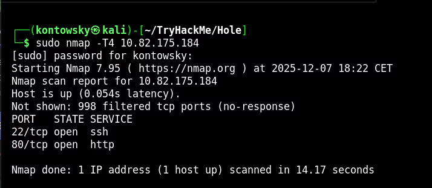
The scan shows Port 22 (SSH) and Port 80 (HTTP). Since we don't have SSH credentials, I checked the website. It displays a lock screen asking for a "full key" composed of three fragments.
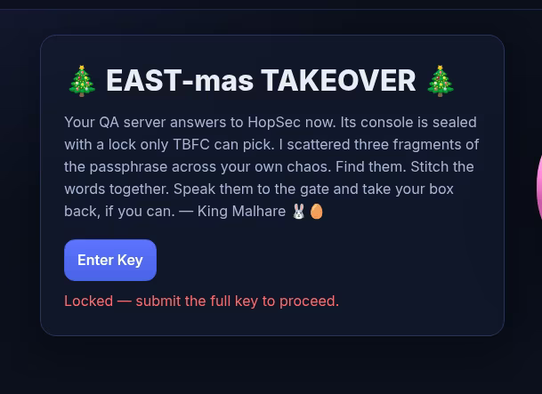
To find these fragments, we need to look deeper. I ran a full port scan (-p-) and used script scanning
(--script=banner) to identify what services are actually running on non-standard ports.
$ nmap -p- -T4 --script=banner 10.82.175.184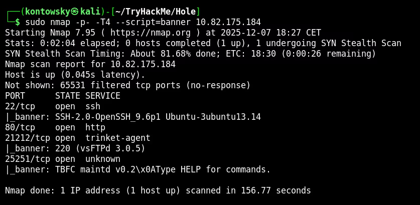
This revealed two new interesting ports: 21212 (FTP) and 25251 (Unknown TBFC service).
2. FTP Key Fragment
Port 21212 is running FTP. A common misconfiguration in FTP servers is allowing Anonymous login.
I tried to connect using the username anonymous and it worked!
$ ftp 10.82.175.184 21212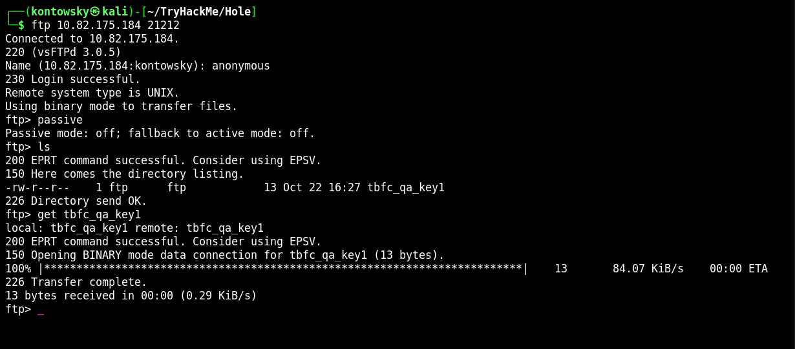
I listed the files and found tbfc_qa_key1. After downloading it using the get command,
I read the file to get the first key fragment.
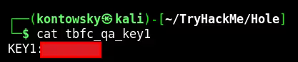
Key 1: [REDACTED]
3. TBFC Key Fragment
Next, I investigated the custom service on port 25251. Since it's a raw TCP service, we can use Netcat (nc) to connect to it and talk to it directly. Think of Netcat as a "manual telephone" for computers.
$ nc 10.82.175.184 25251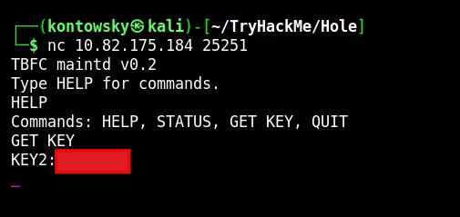
The banner said "Type HELP for commands". I typed HELP and saw a GET KEY command.
Executing it revealed the second key fragment.
Key 2: [REDACTED]
4. DNS Key Fragment
We are still missing the third key. We scanned all TCP ports, so maybe the service is running on UDP. Services like DNS often use UDP. I ran a specific UDP scan.
$ sudo nmap -T4 -sU 10.82.175.184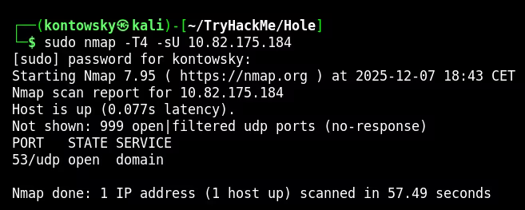
We found Port 53 open (DNS). To query a DNS server manually, we use a tool called dig.
I queried the server for a specific TXT record based on the hint (key3.tbfc.local).
$ dig @10.82.175.184 TXT key3.tbfc.local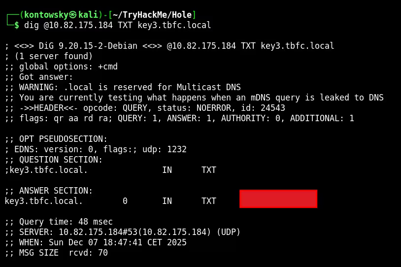
The DNS server responded with the text containing the final key fragment!
Key 3: [REDACTED]
5. Internal Enumeration
With all three keys combined, I unlocked the website console. This gave me access to a terminal inside the system.
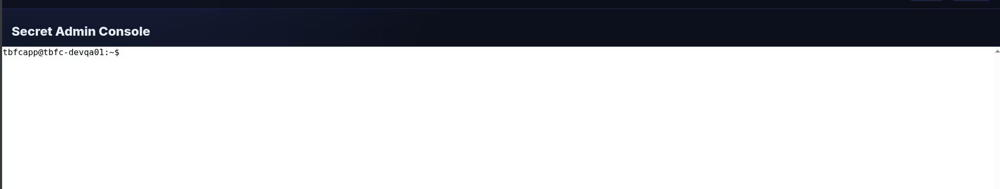
Now that we are "inside", we can see things that were hidden from the outside.
I used the command ss -tulnp to list all listening ports on the machine.
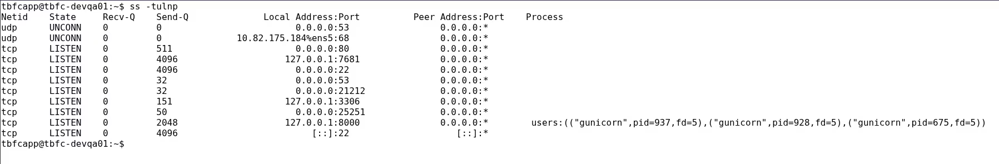
I noticed port 3306 listening on 127.0.0.1 (localhost). This is the standard port for MySQL database.
Since I was already on the system as the user tbfcapp, I tried accessing the database without a password (a common oversight in internal configs).
$ mysql -D tbfcqa01 -e "select * from flags;"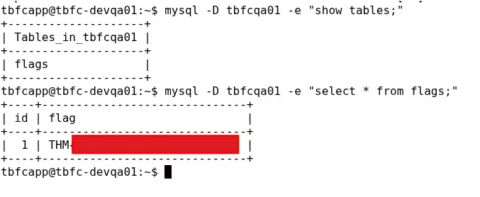
It worked! I dumped the content of the `flags` table and retrieved the final flag.
Final Flag: THM{[REDACTED]}